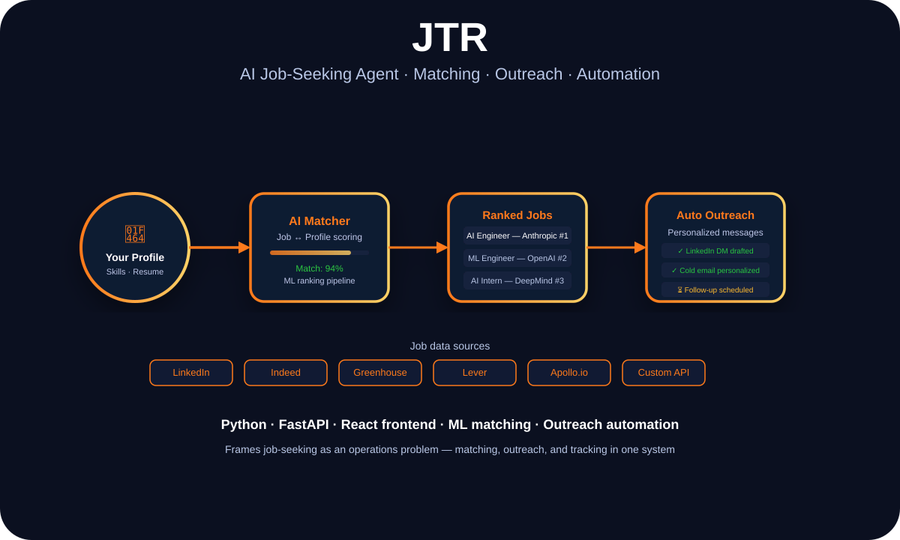

Applied AI · Automation · Agent Systems
JTR: Why I Built an AI Job-Seeking Agent Instead of Just Updating My Resume

Danish Nadar
AI Engineer · Illinois Institute of Technology
Job searching is an operations problem disguised as a personal challenge. JTR treats it that way — matching, outreach, tracking, and automation instead of hoping the right person sees the right PDF at the right time.

JTR pipeline — profile matching, ranked opportunities, automated outreach
The actual problem with job searching
Job boards are full of noise. Outreach is time-consuming and inconsistent. Tracking applications across spreadsheets falls apart after the first week. The whole process is optimized for volume, not quality — which means the candidates who win are often the ones who just send the most messages.
JTR starts from a different premise: treat job seeking like an ops workflow. Every job listing is an input. Every application is a tracked state. Every outreach message is a personalized artifact generated from profile context, not a copy-pasted template. The goal isn't to automate away effort — it's to redirect effort toward things that actually require judgment.
The pipeline has four stages: ingest job listings from APIs and scraped sources, score them against the candidate's profile using ML matching logic, generate personalized outreach content, and track the full lifecycle from first message to decision.
Matching as a scoring problem
The matching engine compares job descriptions against a structured profile — skills, experience levels, domain preferences, role type. Rather than keyword matching, it uses a vector-based similarity approach that captures semantic alignment: a role that says "autonomous systems" should match "robotics and computer vision" even without exact term overlap.
The output is a ranked list with a match score. High-scoring roles get routed to outreach. Low-scoring roles are stored for reference but don't trigger action. The system is designed to be selective — not exhaustive — because quality outreach beats volume every time.
Personalized outreach at scale
The outreach module generates LinkedIn DMs and cold emails using role-specific context. Each message references specific aspects of the job description — not the company in general, but the actual work: the tech stack, the team description, the specific problem they're hiring to solve.
Follow-up scheduling is handled automatically: if no response after five days, a follow-up message is queued. If a response comes in, the state updates accordingly. The system keeps a complete log of what was sent, when, and to whom — which means no accidental double-messages and full visibility into pipeline health.
Stack
Python · FastAPI · React · ML matching · Apollo.io · LinkedIn API · Greenhouse
Key insight
Job searching is a data pipeline problem. Once you treat it that way, you stop drowning in noise and start measuring what actually works.